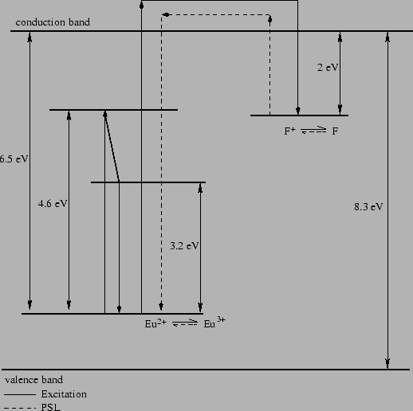

The photo-stimulable phosphor used nowadays is BaF(Br,I):Eu2+
(previously it was BaFBr:Eu2+) [46]. This material
is capable of storing a fraction of the absorbed X-ray energy, and
emitting photo-stimulated luminescence (PSL) later when stimulated by
visible laser light. The mechanism of the PSL is illustrated by the
energy level scheme of BaFBr:Eu2+ shown in
Fig. 2.1. The energy level of interest is the
Eu2+ ground state, 6.5 eV below the conduction band, and the
vacant F+(Br+, I+) centers 2.0 eV below the conduction
band. The ground state has Eu2+ and vacant F+ centers. The
incident X-ray will pump electrons from the valence band to the
conduction band. Despite being a complicated process, the X-ray
irradiation results in a certain number of Eu3+ and F pairs
proportional to the absorbed X-ray energy. The F centers are caused by
the absence of halogen anions from their designated positions in the
lattice. The energy trapping state of F centers is meta-stable with a
long lifetime. However, the trapped electrons can be easily excited by
visible light ( 2 eV) to return to the conduction band. One of
the occurring processes is the recombination of Eu3+ with one
election to Eu2+, along with the emission of a photon of 3.2 eV
(blue light). A red He-Ne laser is usually used for read-out. Its
wavelength (632.8 nm) is considerably separated from the PSL
wavelength (390 nm). A conventional high-quantum-efficiency
photo-multiplier tube (PMT) is used to collect the photostimulated
photons. The signal is then amplified and digitalized to be processed
by computers. The remaining F centers in the phosphor after read-out
can be further erased by exposing to visible light. In practice, it is
more efficient to bleach it with a powerful halogen lamp (500W).
2 eV) to return to the conduction band. One of
the occurring processes is the recombination of Eu3+ with one
election to Eu2+, along with the emission of a photon of 3.2 eV
(blue light). A red He-Ne laser is usually used for read-out. Its
wavelength (632.8 nm) is considerably separated from the PSL
wavelength (390 nm). A conventional high-quantum-efficiency
photo-multiplier tube (PMT) is used to collect the photostimulated
photons. The signal is then amplified and digitalized to be processed
by computers. The remaining F centers in the phosphor after read-out
can be further erased by exposing to visible light. In practice, it is
more efficient to bleach it with a powerful halogen lamp (500W).
|

|